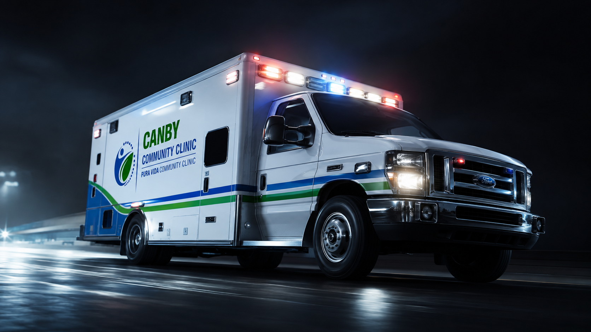

Care starts with a clear next step.
Primary care, preventive screenings, diagnostic and medication support, and practical health education for people who face barriers to care.
Practical care for everyday health needs.
Services depend on clinical availability, staffing, eligibility, and resources. Call before visiting so the team can confirm what is available.
Primary care
General health visits, common concerns, ongoing follow-up, medication review, and referrals when additional care is needed.
Learn about primary care → 02Preventive screenings
Blood pressure, diabetes risk, and age- and risk-appropriate preventive conversations.
Explore prevention → 03Testing & referrals
Help coordinating diagnostic or laboratory services when clinically appropriate, with follow-up planning.
See diagnostic support → 04Medication support
Medication review, practical guidance, and assistance identifying resources when available.
Medication information → 05Health education
Clear information about prevention, results, medications, healthy routines, and next steps.
Explore health education → 06Community resources
Connections to public programs, specialists, and community support when the clinic cannot provide a service directly.
Find resources →A simple process, beginning with one call.
Public website forms collect only basic callback information. Do not send diagnoses, test results, insurance member numbers, or other private medical information through ordinary contact forms.
Call or request
Share basic contact information and the kind of help you need.
Confirm availability
The clinic will confirm services, eligibility, costs, and what to bring.
Arrive prepared
Bring a medication list, relevant records, identification if requested, and your questions.
A community clinic built to reduce barriers between people and useful care.
The clinic combines medical support, preventive services, health education, volunteer participation, and community resource navigation. Availability changes, so patients should confirm services before visiting.